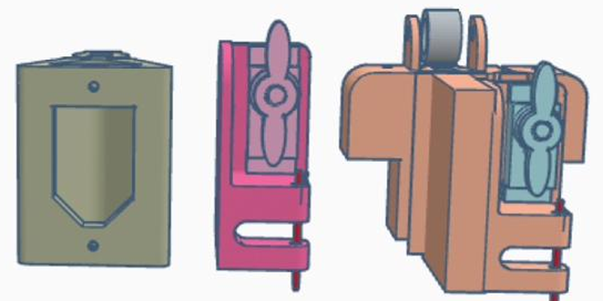
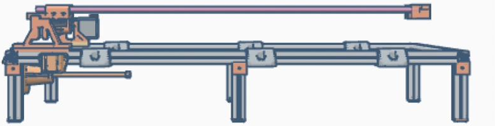

Own the tool
Embellished eveningwear fabric comes from industrial suppliers with minimum orders that small designers can’t meet. A machine you build yourself lets you make it in small batches.
BioStitched is a small, open-source CNC machine that automates tambour embroidery, the couture hand technique behind sequinned eveningwear, for designers who make in small batches. This guide covers everything you need to build one, change it and share what you learn.
Embellished eveningwear fabric comes from industrial suppliers with minimum orders that small designers can’t meet. A machine you build yourself lets you make it in small batches.
Most prom and eveningwear embellishment is petroleum-based and hard to recycle. BioStitched is built around natural-fibre fabrics and biodegradable embellishments.
Building your own tool moves cost into your own time. The guide records the hours, the failures and the fixes, so you can plan for them.
Tambour embroidery is a chain stitch worked from above the fabric with a hooked needle. Prototype II breaks the hand movement into six machine steps. Step through them, or press play.
Ready
One sequin waits at the base of the magazine, lined up with the needle’s own axis.
Actuator: none yet


Builder’s Guide, version 0.1
Chapters are written and published as the build progresses. Open any chapter to see what it covers.
Bill of materials
Tick parts off as you collect them; your ticks are saved in this browser. Quantities and costs are being confirmed against the build, and a fully costed list, including tools and failed attempts, ships with the guide.
Every file you need to build, run and modify the machine is published with version 1.0 of the guide.
All fifteen chapters in one file, for printing or reading offline.
Available with v1.0, [DATE]
Every printed part, as STL files for slicing and STEP files for editing.
Available with v1.0, [DATE]
Sketches for the stitch cycle, stepper moves and servo timing.
Available with v1.0, [DATE]
Test patterns as Ink/Stitch files and ready-to-run G-code.
Available with v1.0, [DATE]
LicencesHardware: [LICENCE]Guide: [LICENCE]Code: [LICENCE]
No. The guide was written by a fashion designer who learned the electronics, 3D printing and code while building the machine, and it assumes you’re starting from the same place.
Small test swatches of chain-stitched, sequinned fabric. It’s a prototype for working out the technique, not yet a production machine.
The guide includes a fully costed parts list, plus the tools you need and the cost of the attempts that failed, so you can budget before you start. [COST SUMMARY]
Natural-fibre base fabrics and biodegradable embellishments, including sequins and beads 3D-printed in PHA. Where biodegradability is claimed but not yet tested, the guide says so.
A desk at home works. Prototype II is being built in a home studio with a 3D printer and a soldering kit; a makerspace or Fab Lab gives you access to the same tools.
Yes, that’s the point. Adapt the machine to your own practice, then share what you changed so the next builder starts further ahead.
BioStitched is designed and built by U’lia Hargrove, a prom and eveningwear designer, as part of an MA at London College of Fashion, University of the Arts London.
It started from a practical problem: the embellished fabric used for prom and eveningwear comes from industrial suppliers with minimum orders, in synthetic materials that are hard to recycle. Building the machine is the research: what it takes, in money, skills and time, for one designer to make their own tool.
Prototype I was built in the LCF Digital Learning Lab alongside a technician. Prototype II is being built in a home studio.